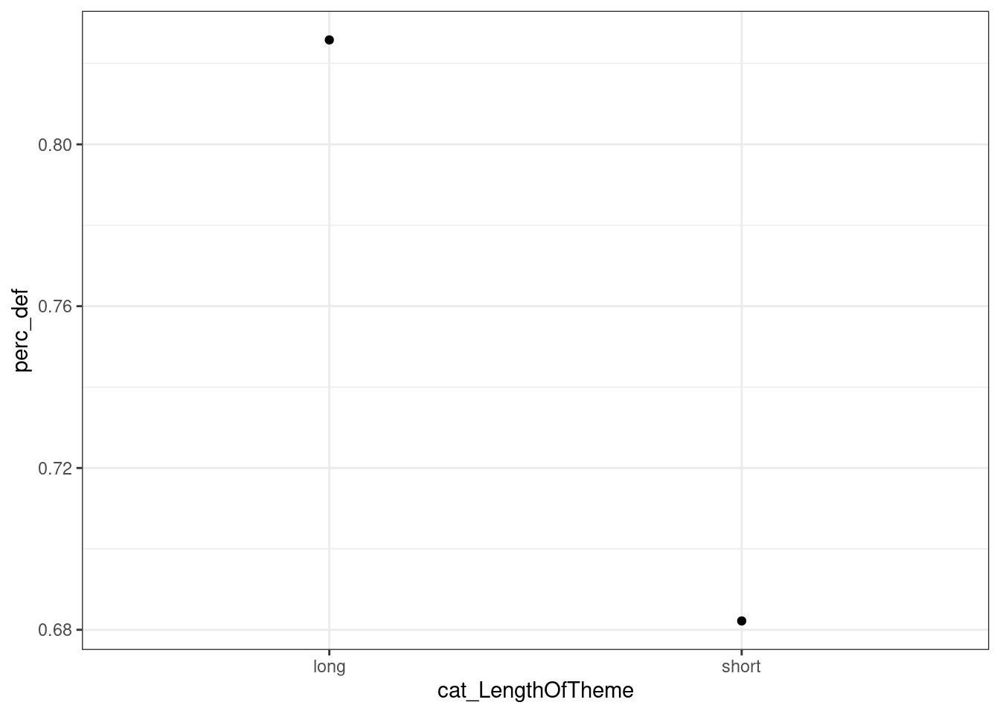
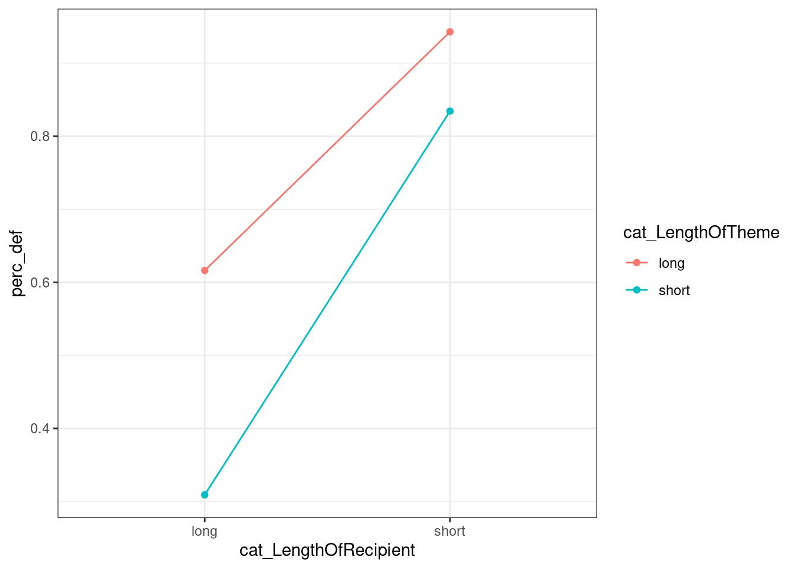

Chapter 6 Examples
6.1 The Dative Verbs Data
I want to know if the length of the theme and the recipient influence the proportion of recipient-theme word orders, and by how much. (In this sample!)
Let’s prepare the data.
# load all packages that will be required
library(dplyr)
library(magrittr)
library(ggplot2)
library(languageR)
# create a data frame with the required columns
dative_relevant <- dative %>% dplyr::select(RealizationOfRecipient, LengthOfRecipient, LengthOfTheme)
# take a look
head(dative_relevant, 3)## RealizationOfRecipient LengthOfRecipient LengthOfTheme
## 1 NP 1 14
## 2 NP 2 3
## 3 NP 1 13# discretize length of recipient
dative_relevant %<>% mutate( cat_LengthOfRecipient = ifelse(LengthOfRecipient > median(LengthOfRecipient) , "long", "short") %>% as.factor() )
dative_relevant %<>% mutate( cat_LengthOfTheme = ifelse(LengthOfTheme > median(LengthOfTheme) , "long", "short") %>% as.factor() )6.1.1 By Length of Recipient
- Now, let’s summarize and plot it
# compute percentage of default word orders by categorical recipient length
(dative_summary1 <- dative_relevant %>%
group_by(cat_LengthOfRecipient) %>%
summarize(perc_def = mean(RealizationOfRecipient == "NP"),
N = n()))## `summarise()` ungrouping output (override with `.groups` argument)## # A tibble: 2 x 3
## cat_LengthOfRecipient perc_def N
## <fct> <dbl> <int>
## 1 long 0.448 1035
## 2 short 0.875 2228
- Now, let’s fit a mode with treatment contrasts and look at its coefficients.
# Fit model 1A (treatment contrasts):
# Fit a linear model with treatment contrasts according to the following specification:
# perc_def = a + b*length of recipient
# create a treatment contrast for (categorical) length ('ct' is for 'contrast, treatment')
dative_summary1 %<>% mutate(ct_LR = dplyr::recode(cat_LengthOfRecipient, "short"=0, "long"=1))
# use coef(lm(...)) to fit the linear model described above and extract its coefficients
coef(lm( perc_def ~ 1 + ct_LR, data = dative_summary1))## (Intercept) ct_LR
## 0.8752244 -0.4269152- Now, let’s fit a mode with sum contrasts and look at its coefficients.
# Fit model 1B (sum contrasts):
# Fit a linear model with sum contrasts according to the following specification:
# perc_def = a + b*length of recipient
# create a treatment contrast for (categorical) length ('cs' is for 'contrast, sum')
dative_summary1 %<>% mutate(cs_LR = dplyr::recode(cat_LengthOfRecipient, "short"=-.5, "long"=.5))
# use coef(lm(...)) to fit the linear model described above and extract its coefficients
coef(lm( perc_def ~ 1 + cs_LR, data = dative_summary1))## (Intercept) cs_LR
## 0.6617668 -0.42691526.1.2 By Length of Theme
- Now, let’s summarize and plot the averages.
# compute percentage of default word orders by categorical theme length
(dative_summary2 <- dative_relevant %>%
group_by(cat_LengthOfTheme) %>%
summarize(perc_def = mean(RealizationOfRecipient == "NP"),
N = n()))## `summarise()` ungrouping output (override with `.groups` argument)## # A tibble: 2 x 3
## cat_LengthOfTheme perc_def N
## <fct> <dbl> <int>
## 1 long 0.826 1309
## 2 short 0.682 1954
- Now, let’s fit a mode with treatment contrasts and look at its coefficients.
# Fit model 2A (treatment contrasts):
# Fit a linear model with treatment contrasts according to the following specification:
# perc_def = a + b*length of theme
# create a treatment contrast for (categorical) length ('ct' is for 'contrast, treatment')
dative_summary2 %<>% mutate(ct_LT = dplyr::recode(cat_LengthOfTheme, "short"=0, "long"=1))
# use coef(lm(...)) to fit the linear model described above and extract its coefficients
coef(lm( perc_def ~ 1 + ct_LT, data = dative_summary2))## (Intercept) ct_LT
## 0.6821904 0.1436309- Now, let’s fit a mode with sum contrasts and look at its coefficients.
# Fit model 1B (sum contrasts):
# Fit a linear model with sum contrasts according to the following specification:
# perc_def = a + b*length of recipient
# create a treatment contrast for (categorical) length ('ct' is for 'contrast, treatment')
dative_summary2 %<>% mutate(cs_LR = dplyr::recode(cat_LengthOfTheme, "short"=-.5, "long"=.5))
# use coef(lm(...)) to fit the linear model described above and extract its coefficients
coef(lm( perc_def ~ 1 + cs_LR, data = dative_summary1))## (Intercept) cs_LR
## 0.6617668 -0.42691526.1.3 By Length of Recipient and Length of Theme
- Now, let’s summarize and plot the averages.
# compute percentage of default word orders by categorical theme and recipient length
(dative_summary3 <-
dative_relevant %>% group_by(cat_LengthOfTheme, cat_LengthOfRecipient) %>%
summarize(perc_def = mean(RealizationOfRecipient == "NP"),
N = n() ))## `summarise()` regrouping output by 'cat_LengthOfTheme' (override with `.groups` argument)## # A tibble: 4 x 4
## # Groups: cat_LengthOfTheme [2]
## cat_LengthOfTheme cat_LengthOfRecipient perc_def N
## <fct> <fct> <dbl> <int>
## 1 long long 0.616 469
## 2 long short 0.943 840
## 3 short long 0.309 566
## 4 short short 0.834 1388# plot averages
dative_summary3 %>% ggplot(aes( cat_LengthOfRecipient, perc_def, color = cat_LengthOfTheme, group = cat_LengthOfTheme)) + geom_point() + geom_line()
- Now, let’s fit a mode with treatment contrasts and look at its coefficients.
# Fit model 2A (treatment contrasts):
# Fit a linear model with treatment contrasts according to the following specification:
# perc_def = a + b1*length of theme + b2*length of recipient + b3*length of theme*length of recipient
# create a treatment contrast for (categorical) length ('ct' is for 'contrast, treatment')
dative_summary3 %<>% mutate( ct_LR = dplyr::recode(cat_LengthOfRecipient, "short"=0, "long"=1),
ct_LT = dplyr::recode(cat_LengthOfTheme, "short"=0, "long"=1)
)
# use coef(lm(...)) to fit the linear model described above and extract its coefficients
coef(lm( perc_def ~ 1 + ct_LT + ct_LR + ct_LT:ct_LR, data = dative_summary3))## (Intercept) ct_LT ct_LR ct_LT:ct_LR
## 0.8342939 0.1085632 -0.5251067 0.1984542- Please verify the meaning of the coefficients in the above plots, data frames and other models
- Intercept: The
perc_defvalue for the baseline value (i.e., short theme and short recipient). - Main effect, coefficient for
ct_LT: The effect of theme length when the recipient is short. - Main effect, coefficient for
ct_LR: The effect of recipient length when the theme is short. - Interaction, coefficient for
ct_LT:ct_LR: The additional effect of theme length when the the recipient is long. (or: The additional effect of recipient length when the the theme is long.)
- Intercept: The
- Now, let’s fit a mode with sum contrasts and look at its coefficients.
# Fit model 1B (sum contrasts):
# Fit a linear model with sum contrasts according to the following specification:
# perc_def = a + b1*length of theme + b2*length of recipient + b3*length of theme*length of recipient
# create a sum contrast for (categorical) length ('cs' is for 'contrast, sum')
dative_summary3 %<>% mutate( cs_LR = dplyr::recode(cat_LengthOfRecipient, "short"=-.5, "long"=.5),
cs_LT = dplyr::recode(cat_LengthOfTheme, "short"=-.5, "long"=.5)
)
# use coef(lm(...)) to fit the linear model described above and extract its coefficients
coef(lm( perc_def ~ 1 + ct_LT + ct_LR + ct_LT:ct_LR, data = dative_summary3))## (Intercept) ct_LT ct_LR ct_LT:ct_LR
## 0.8342939 0.1085632 -0.5251067 0.1984542- Please verify the meaning of the coefficients in the above plots, data frames and other models:
- Intercept: Average percentage of default word orders.
- Main effect, coefficient for
ct_LT: Average effect of length of the theme. - Main effect, coefficient for
ct_LR: Average effect of length of the recipient. - Interaction, coefficient for
ct_LT:ct_LR: Change in the effect ofct_LRdue to one unit of change inct_LT. (or: Change in the effect ofct_LTdue to one unit of change inct_LR.)